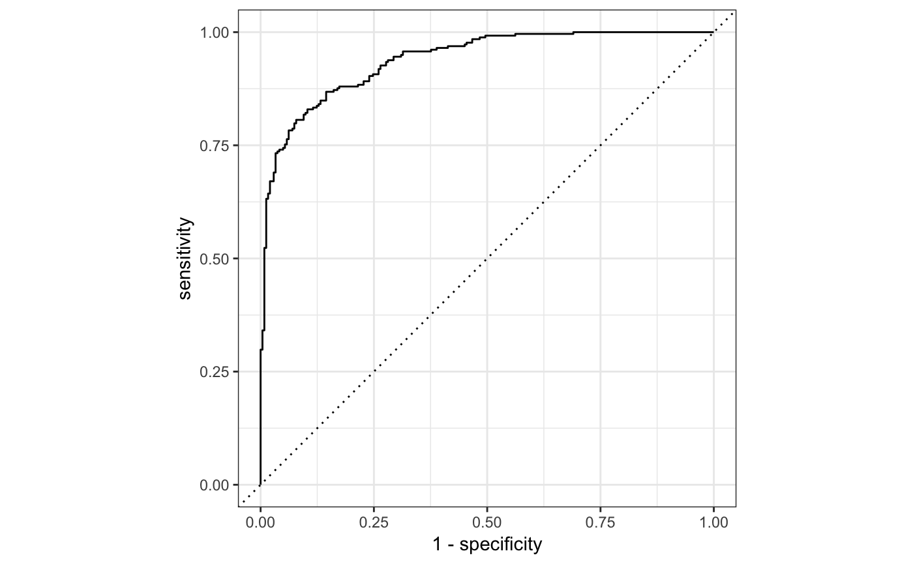

These functions compute the areas under the receiver operating
characteristic (ROC) curve (roc_auc), the precision-recall
curve (pr_auc), or the multinomial log loss (mnLogLoss). The actual ROC
curve can be created using roc_curve.
roc_auc(data, ...) # S3 method for data.frame roc_auc(data, truth, ..., options = list(), na.rm = TRUE) pr_auc(data, ...) # S3 method for data.frame pr_auc(data, truth, ..., na.rm = TRUE) mnLogLoss(data, ...) # S3 method for data.frame mnLogLoss(data, truth, ..., na.rm = TRUE, sum = FALSE) # S3 method for data.frame roc_curve(data, truth, ..., options = list(), na.rm = TRUE)
| data | A data frame with the relevant columns. |
|---|---|
| ... | A set of unquoted column names or one or more
|
| truth | The column identifier for the true class results (that is a factor). This should an unquoted column name although this argument is passed by expression and support quasiquotation (you can unquote column names or column positions). |
| options | Options to pass to |
| na.rm | A logical value indicating whether |
| sum | A logical. Should the sum of the likelihood contrinbutions be returned (instead of the mean value)? |
A number between 0 and 1 (or NA) for roc_auc or
pr_auc. For mnLogLoss a number or NA. For roc_curve, a tibble with
columns sensitivity and specificity. In an ordinary (i.e. non-smoothed)
curve is used, there is also a column for threshold.
There is no common convention on which factor level should
automatically be considered the "relevant" or "positive" results.
In yardstick, the default is to use the first level. To
change this, a global option called yardstick.event_first is
set to TRUE when the package is loaded. This can be changed
to FALSE if the last level of the factor is considered the
level of interest.
roc_curve computes the sensitivity at every unique
value of the probability column (in addition to infinity and
minus infinity). If a smooth ROC curve was produced, the unique
observed values of the specificity are used to create the curve
points. In either case, this may not be efficient for large data
sets.
library(tidyselect) data("two_class_example") prob_cols <- levels(two_class_example$truth) roc_auc(two_class_example, truth = truth, Class1)#> [1] 0.9393139# a warning is issued here because 2 columns are selected: roc_auc(two_class_example, truth, starts_with("Class"))#> Warning: Multiple columns were specified for class probabilities; Class1 will be used.#> [1] 0.9393139library(ggplot2) library(dplyr) roc_curve(two_class_example, truth, Class1) %>% ggplot(aes(x = 1 - specificity, y = sensitivity)) + geom_path() + geom_abline(lty = 3) + coord_equal() + theme_bw()# passing options via a list and _not_ `...` roc_auc(two_class_example, truth = "truth", Class1, options = list(smooth = TRUE))#> [1] 0.9421511pr_auc(two_class_example, truth, prob_cols)#> Warning: Multiple columns were specified for class probabilities; Class1 will be used.#> [1] 0.9425707#> [1] -0.3283096# or mnLogLoss(two_class_example, truth, !! prob_cols)#> [1] -0.3283096